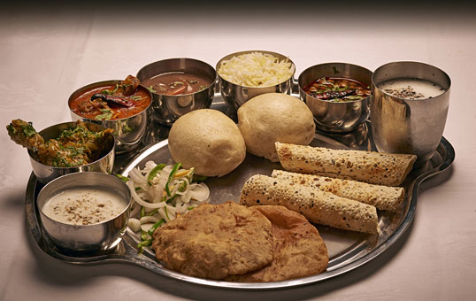

Kashmiri Thali:
Made with locally grown and sourced fresh ingredients every single meal Nhuari (breakfast),
Klar (brunch), Dapohri (lunch) and Byali (dinner) provides you refreshing variety of vegetable dishes alongside a great selection of meat dishes.